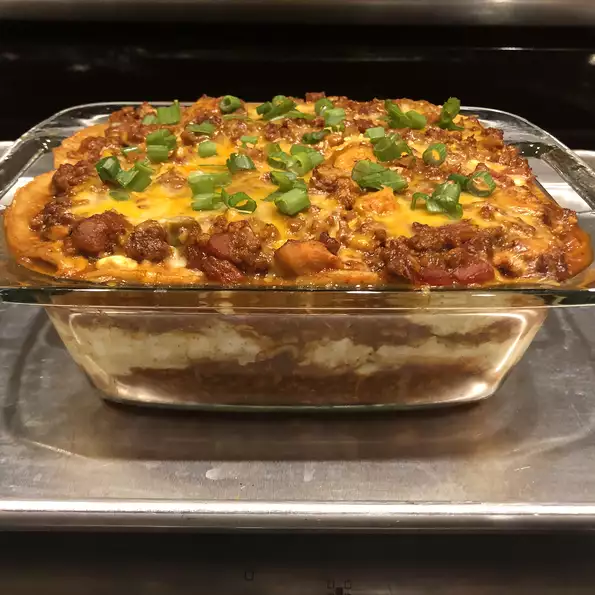

Lasagna

A beautiful and tasteful looking lasagna that is easy to prepare for yourself, friends or family.
- 1 tablespoon vegetable oil
- 1 onion, chopped
- 3 cloves garlic, chopped
- 1 ¼ pounds ground turkey
- 1 (28 ounce) can enchilada sauce
- 1 (14.5 ounce) can diced tomatoes with lime juice and cilantro
- 1 (16 ounce) package small-curd cottage cheese
- 1 egg
- 1 tablespoon ground cumin
- 5 (6 inch) corn tortillas, halved
- 2 cups shredded Mexican cheese blend
- cooking spray
- 1 green onion, diced
- Step 1
Heat oil in a large pot over medium heat. Add onion and garlic; cook and stir until onion is translucent, about 5 minutes. Stir in ground turkey; cook until no longer pink, about 5 minutes. Drain excess grease.
- Step 2
Stir enchilada sauce and diced tomatoes into the pot. Simmer until flavors combine, about 20 minutes. Remove
- Step 3
Preheat the oven to 375 degrees F (190 degrees C).
- Step 4
Mix cottage cheese, egg, and cumin together in a small bowl.
- Step 5
Spread 1/3 of the turkey sauce in the bottom of an 8-inch baking dish. Cover with 1/2 of the corn tortillas. Spread 1/2 of the cottage cheese mixture on top. Sprinkle 1/3 of the Mexican cheese on top. Repeat layers once more, ending with remaining turkey sauce and Mexican cheese.
- Step 6
Spray a large piece of aluminum foil with cooking spray; cover the baking dish with aluminum foil.
- Step 7
Bake in the preheated oven until bubbly, about 30 minutes. Remove aluminum foil and continue baking until top is browned, about 15 minutes. Cool for 15 minutes before serving. Garnish with green onion.
Back to home page